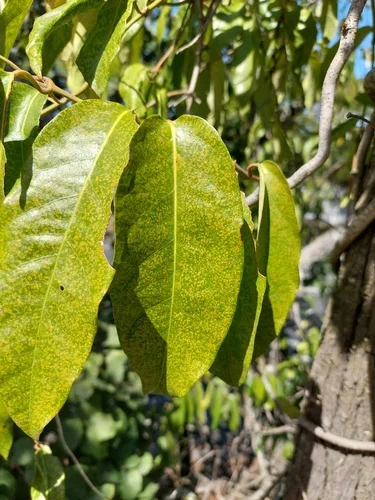

干土中的下叶发黄并萎蔫
先摸土。土是干的，发黄和萎蔫从下部叶开始。土是湿的却同样发黄的，用湿土那一条。

照片用于对照黄叶外观。请结合盆土湿度判断原因。
先看哪里
检查根团中部，水是否沿盆壁迅速流走而未湿润中心。
将花盆现在的重量与平时浇透后的重量作比较。盆明显变轻、表层以下的基质也发干，都支持根团缺水；排水不良也会导致黄叶。
可能原因与下一步
根团确实干透时缓慢浇水至湿透，让多余水排走。观察嫩叶是否恢复挺立。
怎样区分相似问题
表土干燥时盆心仍可能很湿。先检查根层湿度，再掂一掂盆重后决定是否浇水。
观察水是否沿收缩土团旁的缝隙立即流走。若是，分次慢浇，再确认中心是否湿润。若土团内部原本就湿，先查根系再考虑补水。
现在可以做什么
根团干透时均匀润湿并充分沥水；若根团湿，先倒掉积水，检查排水孔。
浇后掂一下盆是否变重。如果水很快流走、盆却仍轻，值得再查土团中心。下次检查时，比较根层湿度与第一次测得的结果。
接下来观察什么
观察枝叶能否恢复挺立，以及新生长是否健康。湿土中仍萎蔫时先检查根团。
检查水是否绕过了干透的根团
盆土过干时，水可能沿盆壁缝隙直接漏走。浇后要同时查根团中心与边缘，若仅四周湿，应分次缓慢润透再沥水，之后再评估萎蔫是否缓解。